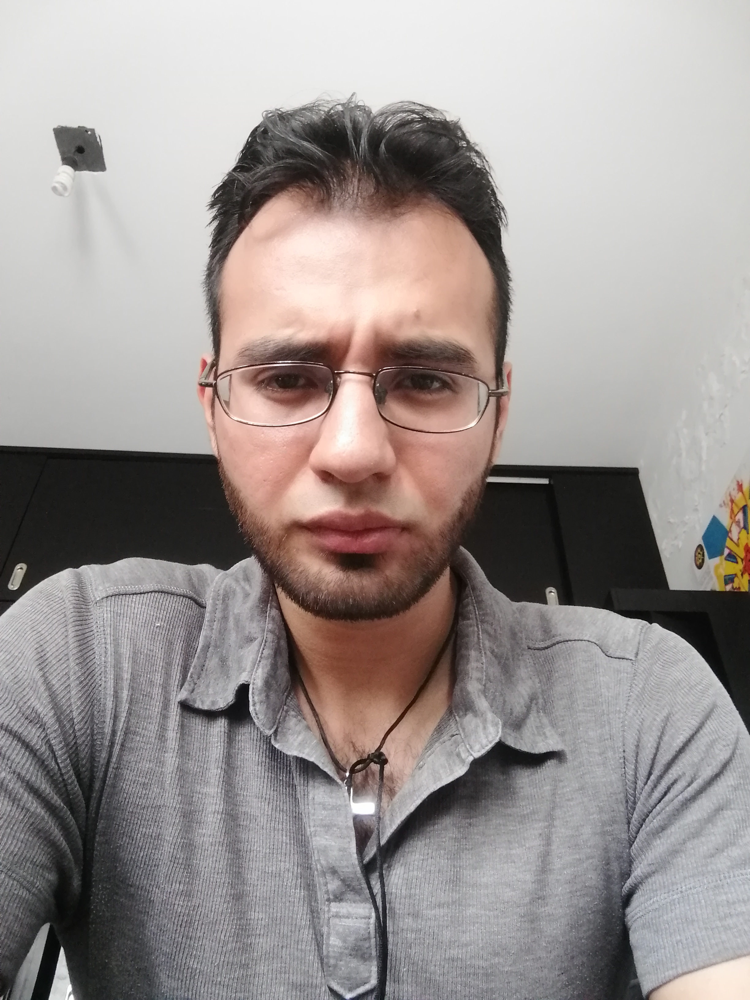

Educational background
B.Eng. Civil Engineering - University of Guanajuato (UG), Guanajuato, México
M.Sc. of Structures - Autonomous University of Queretaro (UAQ), Querétaro, México
PhD student in Civil Engineering (Scientific Computation) - Hong Kong University of Science and Technology (HKUST), Hong Kong, Hong Kong